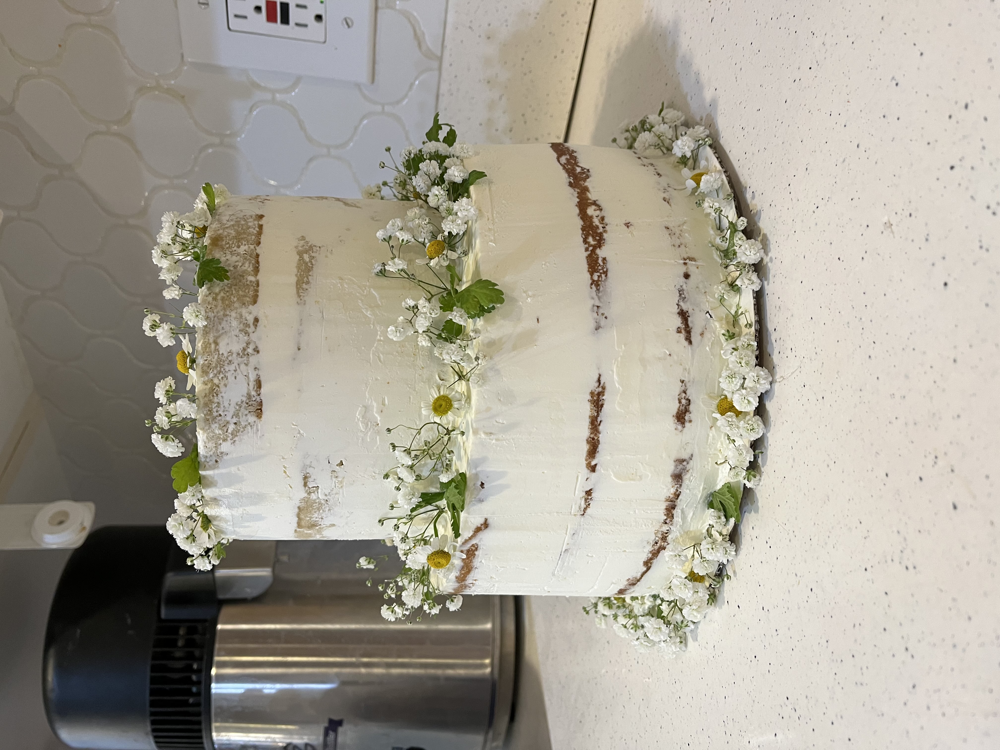
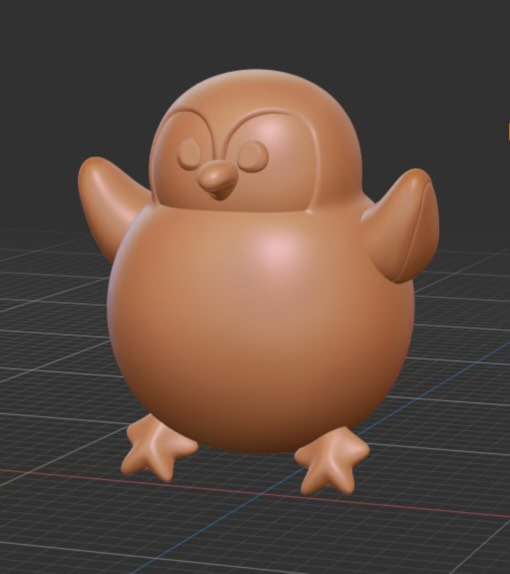

Who is Brooklyn Mecham
Allow me to introduce myself; I'm Brooklyn Mecham, a seventeen-year-old Junior from Utah, born and raised alongside my large family of eight. From the earliest days of my childhood, I've been captivated by the world of drawing. What began as simple doodles of my parents and sketches of our beloved family dog has evolved into far more sophisticated projects, as evidenced by the artwork showcased below.
Check out my recent Work!
"Lemon Curd Blueberry Wedding Cake"
This was a lemon curd blueberry wedding cake I made for my sister’s wedding. My sister requested a naked style cake, decorated with baby's breath flowers.

"Golden Still Life"
This was a still life drawing I did for a daily drawing challenge. I focused on digitally painting gold items.

“A Digital Delight”
This was a digital drawing practice I did of a gooey pizza box.
"Sculpted Animal Keychains”
These were some 3D sculpted animal keychains I'm working on. I plan to 3d print them, paint them, and sell them.
"Self Portrait: Unveiling the Unspoken"
This was a self portrait I made for my AP Art Portfolio class made with gouache and colored pencils. The meaning behind this piece was to not expect others to know what you are thinking.

"Imaginary Adventures"
This was another AP Art Portfolio project I made for class depicting my nephew on a roller coaster riding through his imagination. It was inspired by Bear World.
I hope you've enjoyed perusing some of my artwork, and it's worth noting that all of the pieces showcased were created within the past year alone. For me, art isn't just about mastering drawing techniques; it's a multifaceted journey that influences various aspects of life. Reflecting on my own experiences, I realize that art has profoundly shaped my identity and outlook. I can't imagine how different I would be without the ability to express myself through art as I do now. This is precisely why I'm so passionate about organizing these camps—to share the immense joy and fulfillment that art has brought to my life with you and your families. It's my hope that through these experiences, we can inspire creativity, foster self-expression, and create lasting memories together.
Below is a link to a page that will explain more of the logistics of the art camp.